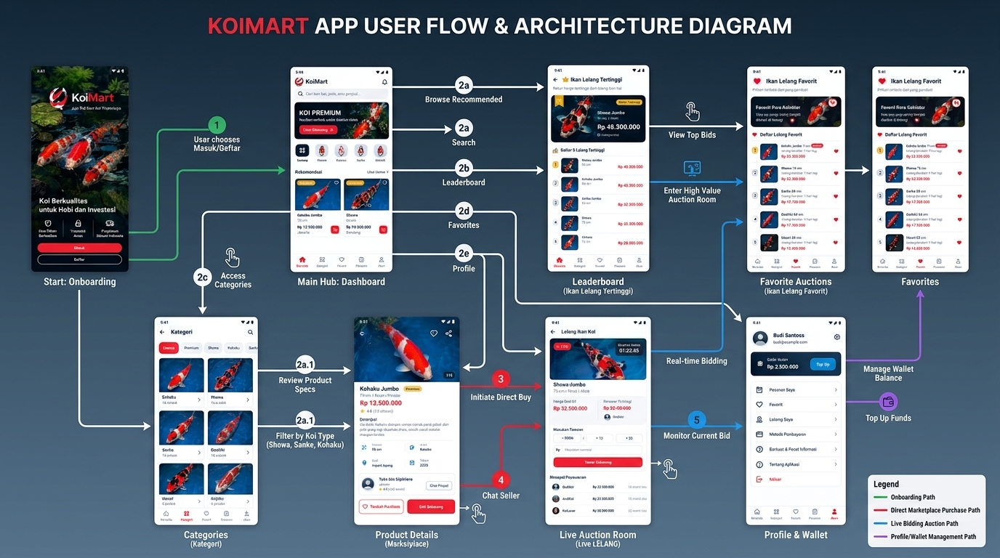

Diagram alur visual berdasarkan rancangan 8 layar antarmuka Android.

Pengguna masuk melalui Onboarding Screen berlatar kolam koi, memilih Masuk atau Daftar, kemudian diarahkan langsung ke Beranda utama.
Eksplorasi dari Beranda atau tab Kategori, membuka Detail Produk (spesifikasi, foto 1/5, ulasan toko), lalu Chat Penjual atau Beli Sekarang.
Akses lelang dari Leaderboard Rekor Tertinggi atau Lelang Favorit. Masuk ke Live Room dengan countdown timer, pasang bid instan (+500rb/+1jt), dan pantau riwayat tawaran.
Akses tab Akun untuk memantau saldo dompet, Top Up saldo jaminan lelang, serta melacak status Pesanan Saya dan Lelang Saya.